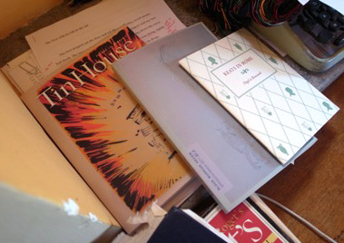
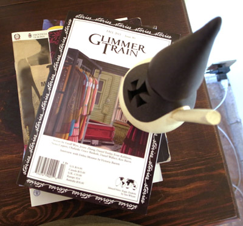
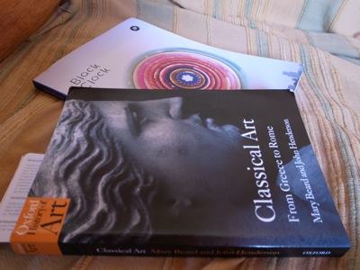
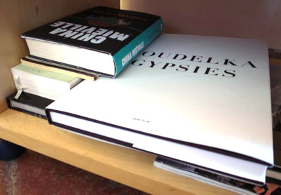
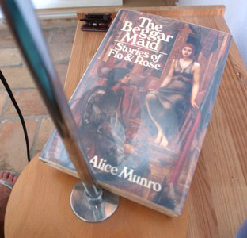

Books I'm Reading
What follows is a series of photos of books in their natural habitats around the apartment. I like books; I like a lot of books. I also like literary magazines and any printed thing with words, really. And it shouldn’t be a surprise that on particularly wordy days, or weeks, books and literary magazines are simply laying around. Books without a proper place is also a symptom of no more space on the bookshelves. Maybe I should be grateful that I don’t lived in an English-speaking country with cheaper and direct access to desirable titles, because otherwise us and the feline would be completely overrun.

Literary material: (Tin House, The Black Warrior Review and Keats in Rome by Nigel à Brassard) on my desk, dictionary corner, typewriter.

Glimmer Train, Fall Issue. Arrived last week. Book corners also pictured: Jenn Ashworth’s A Kind of Intimacy

Black Clock and Classical Art paired picture-perfect on the couch.

A no-mans-land. Most of these books are Simon’s photography ones, beautiful books, alongside some of my wordy ones. Also pictured: Embassytown by China Miéville and The Story of Art by E.H. Gombrich

The book downstairs by the bed: sleepy reading material: The Beggar Maid by Alice Munro.
· · · · · · · · · · · · · · · · · · · ·